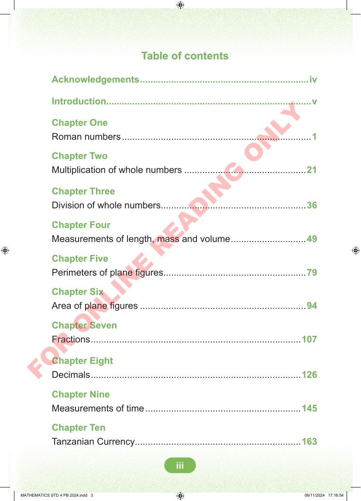

Table of contents
Table of contents. Acknowledgements, page four. Introduction, page five. Chapter One: Roman numbers, page one. Chapter Two: Multiplication of whole numbers, page twenty-one. Chapter Three: Division of whole numbers, page thirty-six. Chapter Four: Measurements of length, mass and volume, page forty-nine. Chapter Five: Perimeters of plane figures, page seventy-nine. Chapter Six: Area of plane figures, page ninety-four. Chapter Seven: Fractions, page one hundred seven. Chapter Eight: Decimals, page one hundred twenty-six. Chapter Nine: Measurements of time, page one hundred forty-five. Chapter Ten: Tanzanian Currency, page one hundred sixty-three.
